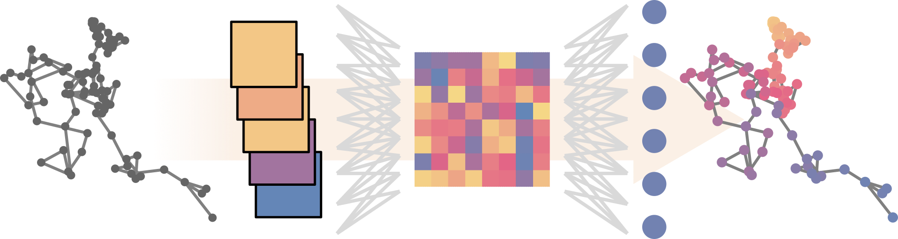

Getting started
— STEP —

Diffusion properties at every time step

Get started | Documentation | Tutorials | Cite us
STEP is a machine learning pipeline to study time-dependent diffusion properties by extracting them at every time step of the input trajectories. This allows us to infer where changes in the diffusive behaviour occur (if there are any). The method was originally developed for the paper “Inferring pointwise diffusion properties of single trajectories with deep learning”.
In order to characterize the mechanisms governing the diffusion of particles in biological scenarios, it is essential to accurately determine their diffusive properties. However, analyzing these trajectories is a challenging task, due to their stochastic nature and other associated technical drawbacks, as for example the presence of noise in their acquisition. Furthermore, we often encounter changes in the motion properties through time, which adds on to the complexity. Typically, these changes are associated to physical changes of the tracked particles (from animals in the wild to proteins in a cell) but also to their interaction with other components in their environments.
Accurately characterizing these time-dependent properties of motion can therefor provide enormous insight sabout the physical systems at hand. With our work, we contribute to the community effort of studying diffusive processes with state-of-the-art machine learning techniques, instigated by initiatives like the AnDi Challenge. We propose STEP: a method to extract the diffusion properties of trajectories at every time step. This way, we can easily see any possible changes through time both sudden and continuous, without any prior assumption about the system.
We provide a python library with extensive documentation to simulate time-dependent diffusive processes, train machine learning models to characterize them, and analyze their performance. Follow our tutorials to get familiar with our method, reproduce our results, and use STEP to analyze your experiments!
We use the AnDi datasets library to simulate the anomalous diffusion segments in the trajectories.
In order to use our library, you will need a system with python>=3.10. Then, you can install STEP by first cloning our repository in your filesystem:
git clone https://github.com/BorjaRequena/step.git
cd step
pip install .This will install all the necessary dependencies to make full use of the library.
To train the machine learning models, we recommend using a GPU to take full advantage of PyTorch. A viable option is to use Google colab. There, you can use hardware accelerators (GPUs and TPUs) from the menu Runtime>Change runtime type and selecting your desired accelerator in the Hardware accelerator dropdown menu.
Contributing
Contributions are more than welcome! Should you need support for a new feature, open an issue! If you feel like developing it yourself, open a pull request!
This repository is based on nbdev. Therefore, you should get familiar with the basics of nbdev beforehand. However, if you have any doubt, you can open a pull request and ask us. We’ll be more than happy to help you out!
To be able to contribute, you’ll have to first fork the repository. Then, clone the fork to your local system and install it in editable mode:
git clone https://github.com/YourUserName/step.git
cd step
pip install -e .Then, you’ll have to create a branch in your fork where you will commit your edits.
git checkout -b my-featureOnce you have commited the first changes to the branch, you can already open a pull request to merge it into our master branch. This way, we can see your progress and help you with the integration from the start.
Cite us
If you use this library, please cite us! We would appreciate both a citation to the library and to our original work.
To cite the original work:
@misc{Requena2023STEP,
author = {Requena, Borja and Mas\'o, Sergi and Bertran, Joan and
Lewenstein, Maciej and Manzo, Carlo and Mu{\~n}oz-Gil, Gorka},
title = {Inferring pointwise diffusion properties of single
trajectories with deep learning},
doi = {10.48550/ARXIV.2302.00410},
url = {https://arxiv.org/abs/2302.00410},
publisher = {arXiv},
year = {2023},
keywords = {Soft Condensed Matter (cond-mat.soft),
Biological Physics (physics.bio-ph),
Data Analysis, Statistics and Probability (physics.data-an),
Quantitative Methods (q-bio.QM), FOS: Physical sciences,
FOS: Biological sciences, FOS: Biological sciences},
copyright = {Creative Commons Attribution Share Alike 4.0 International}
}To cite the library:
@software{Requena2022step,
author = {Requena, Borja and Mu{\~n}oz-Gil, Gorka},
title = {BorjaRequena/step},
month = dec,
year = 2022,
publisher = {Zenodo},
doi = {10.5281/zenodo.7480413},
url = {https://doi.org/10.5281/zenodo.7480413}
}